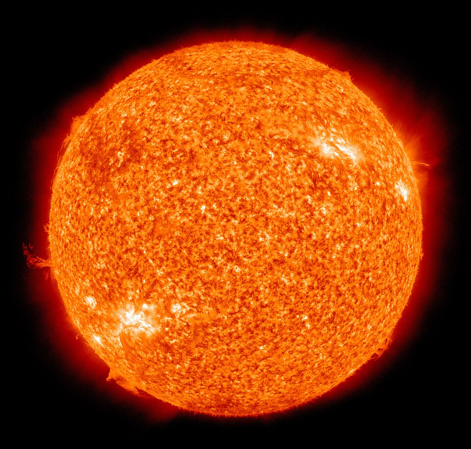

TOUR OF THE SOLAR SYSTEM
태양을 도는
태양을 도는
여덟 개의 세계
태양계는 약 46억 년 전에 태어났어요. 중심의 태양과 그 둘레를 도는 여덟 행성을 사진과 함께 쉽게 살펴보세요.

움직이는 태양계
안쪽 행성일수록 태양을 빨리 돌아요. 아래 그림은 이해를 돕는 모형이라 크기와 거리, 속도는 실제 비율이 아니에요.
수성 → 금성 → 지구 → 화성 → 목성 → 토성 → 천왕성 → 해왕성 (안쪽부터)